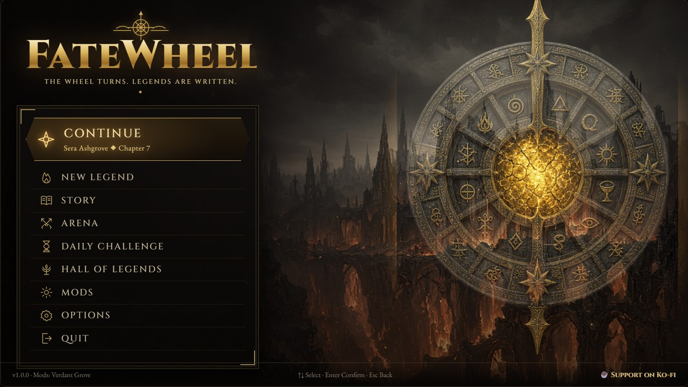
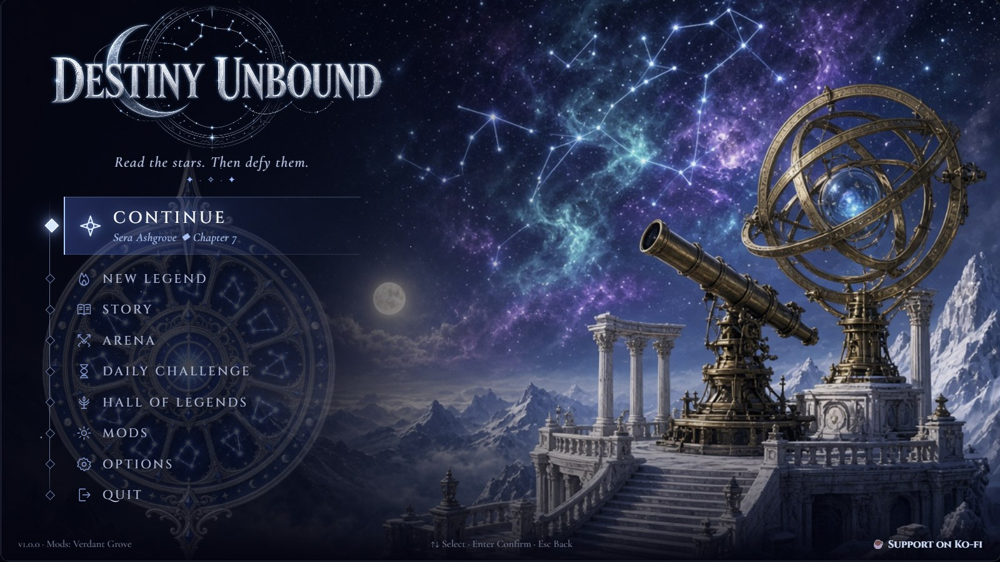
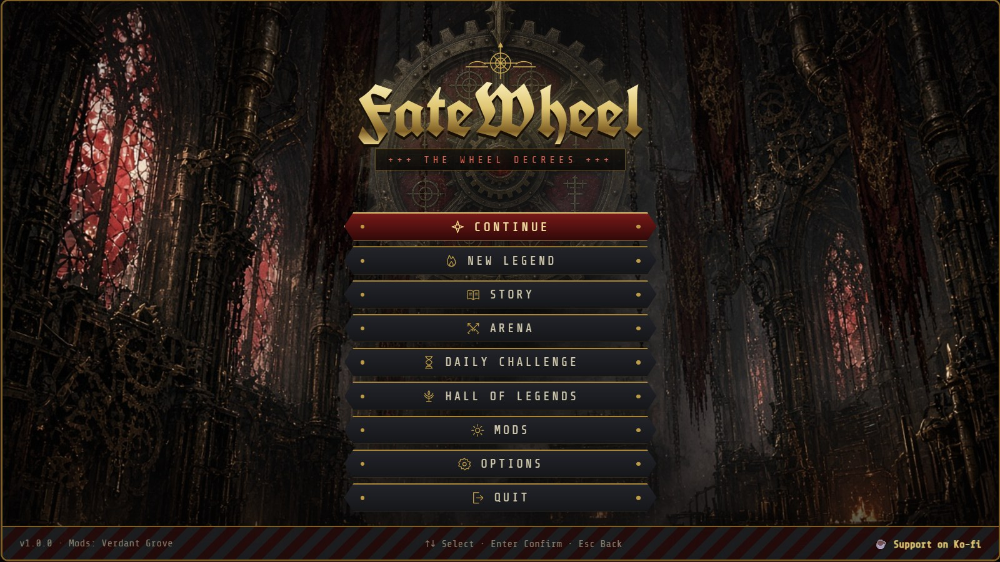
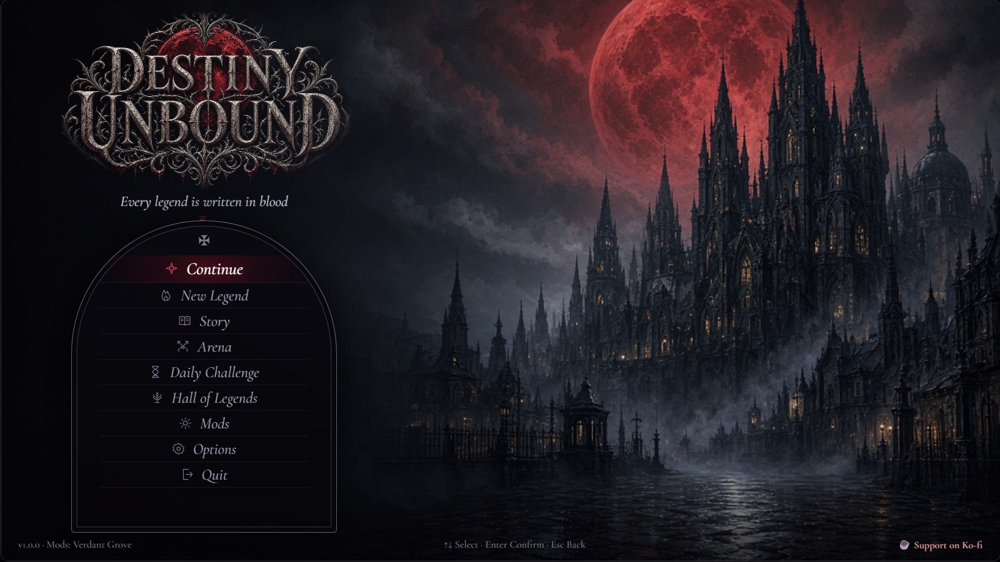

Main menu mockups
The painted title screens and Options screens, one per theme. These are the designs the game's real main menu is built from (scripts/make-menu-css.js).

1 · Ashen CrownDark fantasy

2 · Astral OracleCelestial high fantasy

3 · Iron LitanyGrimdark gothic sci-fi

4 · Blood MoonGothic horror
Earlier drafts
The first, code-only versions. Adventurer's Sheet was later replaced by Astral Oracle.